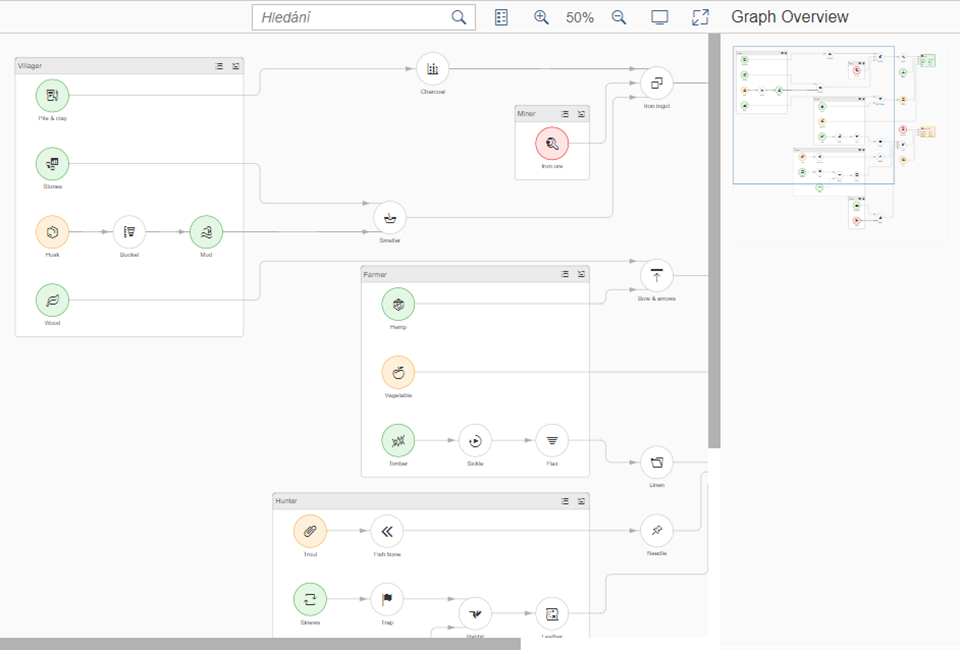

What's New in SAPUI5 1.50
What's New in SAPUI5 1.50
The Demo Kit app has a new modern design that is intuitive and can be used on both desktop and mobile devices.
The global search has been improved and the results are now displayed in categories. They also include results from the Samples section, which was not possible with the old Demo Kit since the Explored app was a decoupled app.
The new Demo Kit contains the following sections:
|
Disclaimer:
The below video
|
sap.m.PlanningCalendarLegend: Enables two types of items to be displayed in thesap.m.PlanningCalendaras a legend - types of days (for example, special dates and holidays) and appointments. For more information, see the API Reference.
sap.suite.ui.commons.networkgraph: You can use this control to visualize data as a graph that illustrates how individual records are related. Displaying data as a network graph may also help you to highlight some of the data discrepancies that might be overlooked when the same data is displayed as a list or any other form of text.The network graph supports both directed and undirected graphs and even graphs that contain cycles. The control provides broad customization options, enabling you to separate the graph layout from its rendering and to position individual graph elements freely, for example, when displaying geospatial data on top of a map.
For more information, see Network Graph, the API Reference and the samples.
sap.suite.ui.commons.statusindicator: You can use theStatusIndicatorcontrol to display a percentage value in the form of a fillable shape, translating plain numbers into meaningful shapes that visually convey the status of the items they represent.You can fully customize the control by setting fill direction and fill color and by picking a shape that matches the value measured. In addition to the library of standard shapes, you can define your own custom SVG shapes. This allows you to create a powerful connection between your data and business by using symbols from a particular domain—for example, a half-filled truck shape may represent a real delivery truck filled up to 50% of its capacity.
The status indicator is best used in tiles, tables, and object pages.
For more information, see Status Indicator, the API Reference and the sample.

sap.f.DynamicPagehas the following new features:You can now define the priority of the
DynamicPageTitleareas with the use of the newprimaryAreaproperty. The primary area shrinks at a slower rate, remaining visible as long as possible.With the new content aggregation of the
DynamicPageTitle, you can add content in the middle area of the title. This content is displayed both in the expanded and collapsed states of theDynamicPageHeader.
sap.f.semantic.SemanticPage: To align with the latest SAP Fiori design guidelines, the following changes were implemented:The position of the draft indicator is changed to be the first one before the finalizing actions in the footer toolbar of the page.
A new Edit button was added as the main action and the order of the actions changed to Edit, Delete, Copy, and Add.
sap.gantthas the following new features:Relative time: You can configure the time label as relative time in the
GanttChartheader, for example, Day 1, Day 2.The new
ghostAlignmentinterface enables you to define howGanttChartadjusts the relative position between a shape and the mouse pointer. Using this interface, you can make the start time or end time of the shape align with the cursor line through the whole drag-and-drop process.Shape resize: You can resize a shape by dragging the left or right edge of the shape and dropping it at a new position along the timeline.
sap.m.Labelhas the following new properties:wrapping: Determines whether text within a label is wrapped. The default value isfalse. If set tofalse, the label text only uses one line and any exceeding text is truncated and replaced with an ellipsis. When you use theLabelwithin asap.m.Formthe label text is automatically displayed as wrapped.
displayOnly: Determines whether the label is indisplayOnlymode. Controls in this mode are non-interactive, non-focusable, cannot be edited, and do not form part of the tab chain. ThedisplayOnlyproperty is used inFormcontrols when they are in preview mode.
sap.m.MessageStripnow supports a limited set of formatting tags for the text. The available tags are<a>,<em>,<strong>, and<u>. To enable the additional formatting tags, you have to set theenableFormattedTextproperty totrue. For more information, see the API Reference and the Samples.sap.m.Panelhas a new parameter for theexpandevent that identifies whether the user or the application is expanding or collapsing thePanelcontrol. The parameter is calledtriggeredByInteractionand istruewhen the panel is expanded as a result of a user action. For more information, see the API Reference and the Samples.sap.m.PlanningCalendar:You can now directly navigate to a date with fewer clicks.
With the use of the new
builtInViewsproperty the app developer can now define which of the built-in views are displayed. For more information, see the API Reference and the sample.To save space, the days are now displayed on the same line as the dates. If you want to display the day names on a separate line, set the
showDayNamesLineproperty totrue. For more information, see the API Reference and the sample.
sap.m.ProgressIndicator: You can now set the control in a display-only state using the newdisplayOnlyproperty. When set totrue, the control has different visualization and is not active, not editable, and cannot be focused. For more information, see the API Reference and the Samples.sap.m.RatingIndicator: A new state can be set using thedisplayOnlyproperty. It enables visually distinguishable rendering of theRatingIndicator(gray color), denoting it as non-interactive in forms. All controls in this mode are also non-focusable and not part of the tab chain. For more information, see the API Reference and the Sample.
sap.m.semantic.SemanticPage. You can now set the background color of the page using the newbackgroundDesignproperty. For more information, see Semantic Page (sap.m) and the API Reference.sap.m.UploadCollection:UploadCollectionItemhas been extended to display folders in theUploadCollectioncontrol. When you click the file name or item thumbnail, you can perform custom actions by adding an event handler to thepressevent. With thedeletePressevent, you can control the deletion of an item. For more information, see the API Reference and the sample.sap.m.Tree: ThetoggleOpenStateevent has been added. For more information, see the API Reference and the sample.sap.suite.ui.commons.ProcessFlow:The nodes of
ProcessFlowthat are stored in thenodesaggregation can be used now as containers for arbitrary content. You can add content toProcessFlowNodeby using thezoomLevelOneContent,zoomLevelTwoContent,zoomLevelThreeContent, andzoomLevelFourContentaggregations.For more information, see the API Reference, the Process Flow Node as Container, and the Process Flow with Image Content samples.
sap.suite.ui.microchart.Interactive*Chart:You can use semantic colors to highlight important data points in interactive charts. Semantic colors can be enabled by using the
colorproperty.This feature was implemented for
InteractiveBarChart,InteractiveDonutChart, andInteractiveLineChart.For more information, see the API Reference and the sample.
sap.ui.unified.Calendar: The days of the previous/next month are no longer visible whenever thesap.ui.unified.Calendardisplays multiple months. For more information, see the API Reference and the sample.sap.ui.comp.smartvariantmanagement.SmartVariantManagement: You can now define favorites for variants by selecting Add in the Manage Variants dialog box if theuseFavoritesproperty in theVariantManagementcontrol has been set totrue.For more information, see Smart Variant Management, the API Reference and the sample.
sap.ui.layout.form.Formandsap.ui.layout.form.SimpleForm: The samples, including the descriptions, have been simplified and are now more consistent. For more information, see the Form and the SimpleForm samples.sap.ui.comp.navpopover.SmartLink: The usability of the samples for the popover has been improved. For more information, see the sample.Smart controls: Columns in the value help can now be sorted in all smart controls that use value help dialog boxes. For more information, see the sample.
Parent topic: Previous Versions